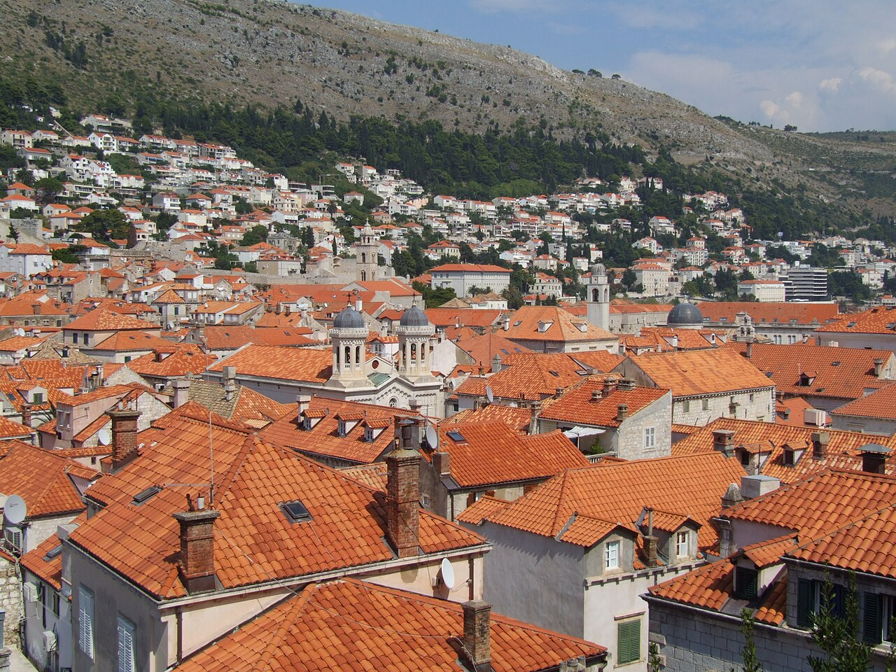

CityLoop Quest Dubrovnik


En 1377, les autorités de Raguse décidèrent que les personnes venant de régions touchées par la peste devaient séjourner trente jours sur des îles proches avant d’entrer en ville. La durée fut ensuite portée à quarante jours, quaranta en italien, origine du mot « quarantaine ». Cette politique ne naquit pas d’une connaissance des microbes, mais d’une observation pragmatique : retarder les contacts réduisait les risques.

La République possédait une « fenêtre des enfants trouvés » au couvent Sainte-Claire. Une mère pouvait y déposer anonymement un nouveau-né, qui était ensuite confié à l’assistance publique. Les statuts réglementaient nourrices, baptême et suivi. Ce dispositif, créé au XVe siècle, révèle une administration capable d’encadrer une question sociale douloureuse sans exiger une exposition publique de la mère.
Les chats de la vieille ville sont devenus des vedettes contemporaines, mais leur présence n’est pas une attraction officiellement organisée. Les ruelles, jardins et espaces sous les escaliers leur offrent des refuges. Les nourrir sans contrôle peut provoquer maladies et nuisances ; les associations locales préfèrent nourriture adaptée, stérilisation et points suivis plutôt que restes abandonnés au hasard.
Le savant Marin Getaldić réalisa au début du XVIIe siècle des expériences optiques dans la grotte de Betina, à l’est de la ville. Il fabriqua de grands miroirs paraboliques capables de concentrer la lumière. L’un d’eux, offert plus tard au cardinal Barberini, est conservé à Greenwich. L’image du scientifique travaillant dans une grotte a nourri des récits presque alchimiques, alors que ses travaux relevaient de mathématiques rigoureuses.

La maquette d’argent portée par saint Blaise montre Dubrovnik avant le séisme de 1667. Les historiens l’examinent comme un document miniature, mais elle n’est pas un relevé exact : l’orfèvre a sélectionné et simplifié les monuments. Elle offre donc à la fois une information et le regard idéalisé que la cité voulait donner d’elle-même.
Enfin, les toits rouges ne sont pas tous anciens. Après les bombardements de 1991, des milliers de tuiles durent être remplacées. Les différences de couleur visibles depuis les remparts ont longtemps permis de distinguer réparations et parties épargnées. Avec le temps, le soleil uniformise lentement les tons, mais la restauration reste inscrite dans la matière même de la carte postale.